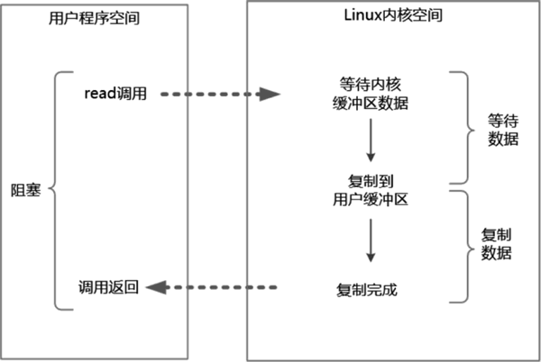
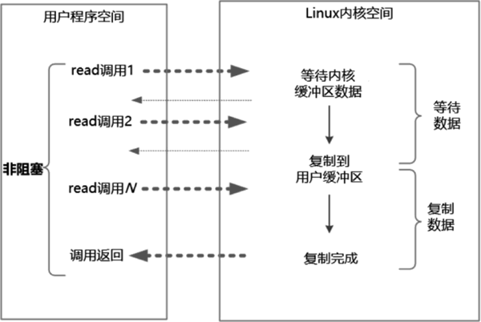
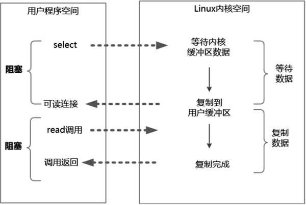
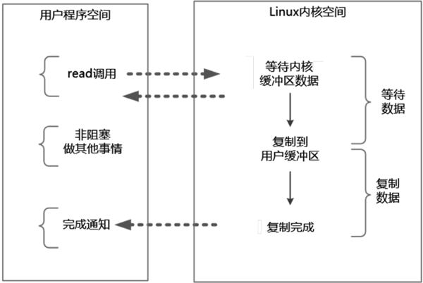

首页 > 编程笔记
Java四种主要的IO模型（详解版）
服务端高并发 IO 编程往往要求的性能都非常高，一般情况下需要选用高性能的 IO 模型。另外，对于Java工程师来说，有关IO模型的知识也是通过大公司面试的必备知识。
接下来就从最为基础的模型开始为大家揭秘 IO 模型的核心原理。
阻塞 IO 指的是需要内核 IO 操作彻底完成后才返回到用户空间执行用户程序的操作指令。“阻塞”指的是用户程序（发起IO请求的进程或者线程）的执行状态。可以说传统的 IO 模型都是阻塞 IO 模型，并且在 Java 中默认创建的 socket 都属于阻塞 IO 模型。
其次，解释一下同步与异步。简单来说，可以将同步与异步看成发起 IO 请求的两种方式。同步 IO 是指用户空间（进程或者线程）是主动发起 IO 请求的一方，系统内核是被动接收方。异步 IO 则反过来，系统内核是主动发起 IO 请求的一方，用户空间是被动接收方。
同步阻塞 IO（Blocking IO）指的是用户空间（或者线程）主动发起，需要等待内核 IO 操作彻底完成后才返回到用户空间的 IO 操作。在 IO 操作过程中，发起 IO 请求的用户进程（或者线程）处于阻塞状态。
阻塞和非阻塞的区别是什么呢？阻塞是指用户进程（或者线程）一直在等待，而不能做别的事情；非阻塞是指用户进程（或者线程）获得内核返回的状态值就返回自己的空间，可以去做别的事情。
同步非阻塞 IO 也可以简称为 NIO，但是它不是 Java 编程中的 NIO。Java 编程中的 NIO（New IO）类库组件所归属的不是基础 IO 模型中的 NIO 模型，而是 IO 多路复用模型。
IO 多路复用（IO Multiplexing）属于一种经典的 Reactor 模式实现，有时也称为异步阻塞 IO，Java 中的 Selector 属于这种模型。
异步 IO 类似于 Java 中典型的回调模式，用户进程（或者线程）向内核空间注册了各种 IO 事件的回调函数，由内核去主动调用。
接下来对以上 4 种常见的 IO 模型进行详细的介绍。
在阻塞式 IO 模型中，从 Java 应用程序发起 IO 系统调用开始，一直到系统调用返回，这段时间内发起 IO 请求的 Java 进程（或者线程）是阻塞的。直到返回成功后，应用进程才能开始处理用户空间的缓冲区数据。
同步阻塞 IO 的具体流程如图 1 所示。
举个例子，在 Java 中发起一个 socket 的 read 操作的系统调用，流程大致如下：
阻塞 IO 的特点是在内核执行 IO 操作的两个阶段，发起 IO 请求的用户进程（或者线程）被阻塞了。
阻塞 IO 的优点是：应用程序开发非常简单；在阻塞等待数据期间，用户线程挂起，基本不会占用 CPU 资源。
阻塞 IO 的缺点是：一般情况下会为每个连接配备一个独立的线程，一个线程维护一个连接的 IO 操作。在并发量小的情况下，这样做没有什么问题。在高并发的应用场景下，阻塞 IO 模型需要大量的线程来维护大量的网络连接，内存、线程切换开销会非常巨大，性能很低，基本上是不可用的。
在 NIO 模型中，应用程序一旦开始 IO 系统调用，就会出现以下两种情况：
同步非阻塞 IO 的流程如图 2 所示。
举个例子，发起一个非阻塞 socket 的 read 操作的系统调用，流程如下：
同步非阻塞 IO 的特点是应用程序的线程需要不断地进行 IO 系统调用，轮询数据是否已经准备好，如果没有准备好就继续轮询，直到完成 IO 系统调用为止。
同步非阻塞 IO 的优点是每次发起的 IO 系统调用在内核等待数据过程中可以立即返回，用户线程不会阻塞，实时性较好。
同步非阻塞 IO 的缺点是不断地轮询内核，这将占用大量的 CPU 时间，效率低下。
总体来说，在高并发应用场景中，同步非阻塞 IO 是性能很低的，也是基本不可用的，一般 Web 服务器都不使用这种 IO 模型。在 Java 的实际开发中，不会涉及这种 IO 模型，但是此模型还是有价值的，其作用在于其他 IO 模型中可以使用非阻塞 IO 模型作为基础，以实现其高性能。
目前支持 IO 多路复用的系统调用有 select、epoll 等。几乎所有的操作系统都支持select系统调用，它具有良好的跨平台特性。epoll 是在 Linux 2.6 内核中提出的，是 select 系统调用的 Linux 增强版本。
在 IO 多路复用模型中通过 select/epoll 系统调用，单个应用程序的线程可以不断地轮询成百上千的 socket 连接的就绪状态，当某个或者某些 socket 网络连接有 IO 就绪状态时就返回这些就绪的状态（或者说就绪事件）。
举个例子来说明 IO 多路复用模型的流程。发起一个多路复用 IO 的 read 操作的系统调用，流程如下：
IO 多路复用模型的 read 系统调用流程如图 3 所示：
IO 多路复用模型的特点是：IO 多路复用模型的 IO 涉及两种系统调用，一种是 IO 操作的系统调用，另一种是 select/epoll 就绪查询系统调用。IO 多路复用模型建立在操作系统的基础设施之上，即操作系统的内核必须能够提供多路分离的系统调用 select/epoll。
和 NIO 模型相似，多路复用 IO 也需要轮询。负责 select/epoll 状态查询调用的线程，需要不断地进行 select/epoll 轮询，以找出达到 IO 操作就绪的 socket 连接。
IO 多路复用模型与同步非阻塞 IO 模型是有密切关系的，具体来说，注册在选择器上的每一个可以查询的 socket 连接一般都设置成同步非阻塞模型，只是这一点对于用户程序而言是无感知的。
IO 多路复用模型的优点是一个选择器查询线程可以同时处理成千上万的网络连接，所以用户程序不必创建大量的线程，也不必维护这些线程，从而大大减少了系统的开销。与一个线程维护一个连接的阻塞 IO 模式相比，这一点是 IO 多路复用模型的最大优势。
通过 JDK 的源码可以看出，Java 语言的 NIO 组件在 Linux 系统上是使用 epoll 系统调用实现的。所以，Java 语言的 NIO 组件所使用的就是 IO 多路复用模型。
IO 多路复用模型的缺点是，本质上 select/epoll 系统调用是阻塞式的，属于同步 IO，需要在读写事件就绪后由系统调用本身负责读写，也就是说这个读写过程是阻塞的。要彻底地解除线程的阻塞，就必须使用异步 IO 模型。
在异步 IO 模型中，在整个内核的数据处理过程（包括内核将数据从网络物理设备（网卡）读取到内核缓冲区、将内核缓冲区的数据复制到用户缓冲区）中，用户程序都不需要阻塞。
异步 IO 模型的流程如下图所示：
举个例子，发起一个异步 IO 的 read 操作的系统调用，流程如下：
异步 IO 模型的特点是在内核等待数据和复制数据的两个阶段，用户线程都不是阻塞的。用户线程需要接收内核的 IO 操作完成的事件，或者用户线程需要注册一个 IO 操作完成的回调函数。正因为如此，异步 IO 有的时候也被称为信号驱动IO。
异步 IO 模型的缺点是应用程序仅需要进行事件的注册与接收，其余的工作都留给了操作系统，也就是说需要底层内核提供支持。
理论上来说，异步 IO 是真正的异步输入输出，它的吞吐量高于 IO 多路复用模型的吞吐量。就目前而言，Windows 系统下通过 IOCP 实现了真正的异步 IO。在 Linux 系统下，异步 IO 模型在 2.6 版本才引入，JDK 对它的支持目前并不完善，因此异步 IO 在性能上没有明显的优势。
大多数高并发服务端的程序都是基于 Linux 系统的。因而，目前这类高并发网络应用程序的开发大多采用 IO 多路复用模型。大名鼎鼎的 Netty 框架使用的就是 IO 多路复用模型，而不是异步 IO 模型。
接下来就从最为基础的模型开始为大家揭秘 IO 模型的核心原理。
四种常见的IO模型
1、同步阻塞IO
首先，解释一下阻塞与非阻塞。阻塞 IO 指的是需要内核 IO 操作彻底完成后才返回到用户空间执行用户程序的操作指令。“阻塞”指的是用户程序（发起IO请求的进程或者线程）的执行状态。可以说传统的 IO 模型都是阻塞 IO 模型，并且在 Java 中默认创建的 socket 都属于阻塞 IO 模型。
其次，解释一下同步与异步。简单来说，可以将同步与异步看成发起 IO 请求的两种方式。同步 IO 是指用户空间（进程或者线程）是主动发起 IO 请求的一方，系统内核是被动接收方。异步 IO 则反过来，系统内核是主动发起 IO 请求的一方，用户空间是被动接收方。
同步阻塞 IO（Blocking IO）指的是用户空间（或者线程）主动发起，需要等待内核 IO 操作彻底完成后才返回到用户空间的 IO 操作。在 IO 操作过程中，发起 IO 请求的用户进程（或者线程）处于阻塞状态。
2、同步非阻塞IO
非阻塞IO（Non-Blocking IO，NIO）指的是用户空间的程序不需要等待内核IO操作彻底完成，可以立即返回用户空间去执行后续的指令，即发起 IO 请求的用户进程（或者线程）处于非阻塞状态，与此同时，内核会立即返回给用户一个 IO 状态值。阻塞和非阻塞的区别是什么呢？阻塞是指用户进程（或者线程）一直在等待，而不能做别的事情；非阻塞是指用户进程（或者线程）获得内核返回的状态值就返回自己的空间，可以去做别的事情。
同步非阻塞 IO 指的是用户进程主动发起，不需要等待内核IO操作彻底完成就能立即返回用户空间的IO操作。在 IO 操作过程中，发起 IO 请求的用户进程（或者线程）处于非阻塞状态。在 Java 中，非阻塞 IO 的 socket 被设置为 NONBLOCK 模式。
同步非阻塞 IO 也可以简称为 NIO，但是它不是 Java 编程中的 NIO。Java 编程中的 NIO（New IO）类库组件所归属的不是基础 IO 模型中的 NIO 模型，而是 IO 多路复用模型。
3、IO多路复用
为了提高性能，操作系统引入了一种新的系统调用，专门用于查询 IO 文件描述符（含 socket 连接）的就绪状态。在 Linux 系统中，新的系统调用为 select/epoll 系统调用。通过该系统调用，一个用户进程（或者线程）可以监视多个文件描述符，一旦某个描述符就绪（一般是内核缓冲区可读/可写），内核就能够将文件描述符的就绪状态返回给用户进程（或者线程），用户空间可以根据文件描述符的就绪状态进行相应的 IO 系统调用。IO 多路复用（IO Multiplexing）属于一种经典的 Reactor 模式实现，有时也称为异步阻塞 IO，Java 中的 Selector 属于这种模型。
4、异步IO
异步 IO（Asynchronous IO，AIO）指的是用户空间的线程变成被动接收者，而内核空间成为主动调用者。在异步 IO 模型中，当用户线程收到通知时，数据已经被内核读取完毕并放在了用户缓冲区内，内核在 IO 完成后通知用户线程直接使用即可。异步 IO 类似于 Java 中典型的回调模式，用户进程（或者线程）向内核空间注册了各种 IO 事件的回调函数，由内核去主动调用。
接下来对以上 4 种常见的 IO 模型进行详细的介绍。
同步阻塞IO
默认情况下，在 Java 应用程序进程中所有对 socket 连接进行的 IO 操作都是同步阻塞 IO。在阻塞式 IO 模型中，从 Java 应用程序发起 IO 系统调用开始，一直到系统调用返回，这段时间内发起 IO 请求的 Java 进程（或者线程）是阻塞的。直到返回成功后，应用进程才能开始处理用户空间的缓冲区数据。
同步阻塞 IO 的具体流程如图 1 所示。

图 1 同步阻塞IO的流程
图 1 同步阻塞IO的流程
举个例子，在 Java 中发起一个 socket 的 read 操作的系统调用，流程大致如下：
- 从 Java 进行 IO 读后发起 read 系统调用开始，用户线程（或者线程）就进入阻塞状态。
- 当系统内核收到 read 系统调用后就开始准备数据。一开始，数据可能还没有到达内核缓冲区（例如，还没有收到一个完整的 socket 数据包），这时内核就要等待。
- 内核一直等到完整的数据到达，就会将数据从内核缓冲区复制到用户缓冲区（用户空间的内存），然后内核返回结果（例如返回复制到用户缓冲区中的字节数）。
- 直到内核返回后用户线程才会解除阻塞的状态，重新运行起来。
阻塞 IO 的特点是在内核执行 IO 操作的两个阶段，发起 IO 请求的用户进程（或者线程）被阻塞了。
阻塞 IO 的优点是：应用程序开发非常简单；在阻塞等待数据期间，用户线程挂起，基本不会占用 CPU 资源。
阻塞 IO 的缺点是：一般情况下会为每个连接配备一个独立的线程，一个线程维护一个连接的 IO 操作。在并发量小的情况下，这样做没有什么问题。在高并发的应用场景下，阻塞 IO 模型需要大量的线程来维护大量的网络连接，内存、线程切换开销会非常巨大，性能很低，基本上是不可用的。
同步非阻塞IO
在 Linux 系统下，socket 连接默认是阻塞模式，可以将 socket 设置成非阻塞模式。在 NIO 模型中，应用程序一旦开始 IO 系统调用，就会出现以下两种情况：
- 在内核缓冲区中没有数据的情况下，系统调用会立即返回一个调用失败的信息。
- 在内核缓冲区中有数据的情况下，在数据的复制过程中系统调用是阻塞的，直到完成数据从内核缓冲区复制到用户缓冲区。复制完成后，系统调用返回成功，用户进程（或者线程）可以开始处理用户空间的缓冲区数据。
同步非阻塞 IO 的流程如图 2 所示。

图 2 同步非阻塞IO的流程
图 2 同步非阻塞IO的流程
举个例子，发起一个非阻塞 socket 的 read 操作的系统调用，流程如下：
- 在内核数据没有准备好的阶段，用户线程发起 IO 请求时立即返回。所以，为了读取最终的数据，用户进程（或者线程）需要不断地发起 IO 系统调用。
- 内核数据到达后，用户进程（或者线程）发起系统调用，用户进程（或者线程）阻塞。内核开始复制数据，它会将数据从内核缓冲区复制到用户缓冲区，然后内核返回结果（例如返回复制到的用户缓冲区的字节数）。
- 用户进程（或者线程）读到数据后，才会解除阻塞状态，重新运行起来。也就是说，用户空间需要经过多次尝试才能保证最终真正读到数据，而后继续执行。
同步非阻塞 IO 的特点是应用程序的线程需要不断地进行 IO 系统调用，轮询数据是否已经准备好，如果没有准备好就继续轮询，直到完成 IO 系统调用为止。
同步非阻塞 IO 的优点是每次发起的 IO 系统调用在内核等待数据过程中可以立即返回，用户线程不会阻塞，实时性较好。
同步非阻塞 IO 的缺点是不断地轮询内核，这将占用大量的 CPU 时间，效率低下。
总体来说，在高并发应用场景中，同步非阻塞 IO 是性能很低的，也是基本不可用的，一般 Web 服务器都不使用这种 IO 模型。在 Java 的实际开发中，不会涉及这种 IO 模型，但是此模型还是有价值的，其作用在于其他 IO 模型中可以使用非阻塞 IO 模型作为基础，以实现其高性能。
IO多路复用
如何避免同步非阻塞 IO 模型中轮询等待的问题呢？答案是采用 IO 多路复用模型。目前支持 IO 多路复用的系统调用有 select、epoll 等。几乎所有的操作系统都支持select系统调用，它具有良好的跨平台特性。epoll 是在 Linux 2.6 内核中提出的，是 select 系统调用的 Linux 增强版本。
在 IO 多路复用模型中通过 select/epoll 系统调用，单个应用程序的线程可以不断地轮询成百上千的 socket 连接的就绪状态，当某个或者某些 socket 网络连接有 IO 就绪状态时就返回这些就绪的状态（或者说就绪事件）。
举个例子来说明 IO 多路复用模型的流程。发起一个多路复用 IO 的 read 操作的系统调用，流程如下：
- 选择器注册。首先，将需要 read 操作的目标文件描述符（socket连接）提前注册到 Linux 的 select/epoll 选择器中，在 Java 中所对应的选择器类是 Selector 类。然后，开启整个 IO 多路复用模型的轮询流程。
- 就绪状态的轮询。通过选择器的查询方法，查询所有提前注册过的目标文件描述符（socket连接）的 IO 就绪状态。通过查询的系统调用，内核会返回一个就绪的 socket 列表。当任何一个注册过的 socket 中的数据准备好或者就绪了就说明内核缓冲区有数据了，内核将该 socket 加入就绪的列表中，并且返回就绪事件。
- 用户线程获得了就绪状态的列表后，根据其中的 socket 连接发起 read 系统调用，用户线程阻塞。内核开始复制数据，将数据从内核缓冲区复制到用户缓冲区。
- 复制完成后，内核返回结果，用户线程才会解除阻塞的状态，用户线程读取到了数据，继续执行。
IO 多路复用模型的 read 系统调用流程如图 3 所示：

图 3 IO多路复用模型的read系统调用流程
图 3 IO多路复用模型的read系统调用流程
IO 多路复用模型的特点是：IO 多路复用模型的 IO 涉及两种系统调用，一种是 IO 操作的系统调用，另一种是 select/epoll 就绪查询系统调用。IO 多路复用模型建立在操作系统的基础设施之上，即操作系统的内核必须能够提供多路分离的系统调用 select/epoll。
和 NIO 模型相似，多路复用 IO 也需要轮询。负责 select/epoll 状态查询调用的线程，需要不断地进行 select/epoll 轮询，以找出达到 IO 操作就绪的 socket 连接。
IO 多路复用模型与同步非阻塞 IO 模型是有密切关系的，具体来说，注册在选择器上的每一个可以查询的 socket 连接一般都设置成同步非阻塞模型，只是这一点对于用户程序而言是无感知的。
IO 多路复用模型的优点是一个选择器查询线程可以同时处理成千上万的网络连接，所以用户程序不必创建大量的线程，也不必维护这些线程，从而大大减少了系统的开销。与一个线程维护一个连接的阻塞 IO 模式相比，这一点是 IO 多路复用模型的最大优势。
通过 JDK 的源码可以看出，Java 语言的 NIO 组件在 Linux 系统上是使用 epoll 系统调用实现的。所以，Java 语言的 NIO 组件所使用的就是 IO 多路复用模型。
IO 多路复用模型的缺点是，本质上 select/epoll 系统调用是阻塞式的，属于同步 IO，需要在读写事件就绪后由系统调用本身负责读写，也就是说这个读写过程是阻塞的。要彻底地解除线程的阻塞，就必须使用异步 IO 模型。
异步IO
异步 IO 模型的基本流程是：用户线程通过系统调用向内核注册某个 IO 操作。内核在整个 IO 操作（包括数据准备、数据复制）完成后通知用户程序，用户执行后续的业务操作。在异步 IO 模型中，在整个内核的数据处理过程（包括内核将数据从网络物理设备（网卡）读取到内核缓冲区、将内核缓冲区的数据复制到用户缓冲区）中，用户程序都不需要阻塞。
异步 IO 模型的流程如下图所示：

图 4 异步IO模型的流程
图 4 异步IO模型的流程
举个例子，发起一个异步 IO 的 read 操作的系统调用，流程如下：
- 当用户线程发起了 read 系统调用后，立刻就可以去做其他的事，用户线程不阻塞。
- 内核开始 IO 的第一个阶段：准备数据。准备好数据，内核就会将数据从内核缓冲区复制到用户缓冲区。
- 内核会给用户线程发送一个信号（Signal），或者回调用户线程注册的回调方法，告诉用户线程 read 系统调用已经完成，数据已经读入用户缓冲区。
- 用户线程读取用户缓冲区的数据，完成后续的业务操作。
异步 IO 模型的特点是在内核等待数据和复制数据的两个阶段，用户线程都不是阻塞的。用户线程需要接收内核的 IO 操作完成的事件，或者用户线程需要注册一个 IO 操作完成的回调函数。正因为如此，异步 IO 有的时候也被称为信号驱动IO。
异步 IO 模型的缺点是应用程序仅需要进行事件的注册与接收，其余的工作都留给了操作系统，也就是说需要底层内核提供支持。
理论上来说，异步 IO 是真正的异步输入输出，它的吞吐量高于 IO 多路复用模型的吞吐量。就目前而言，Windows 系统下通过 IOCP 实现了真正的异步 IO。在 Linux 系统下，异步 IO 模型在 2.6 版本才引入，JDK 对它的支持目前并不完善，因此异步 IO 在性能上没有明显的优势。
大多数高并发服务端的程序都是基于 Linux 系统的。因而，目前这类高并发网络应用程序的开发大多采用 IO 多路复用模型。大名鼎鼎的 Netty 框架使用的就是 IO 多路复用模型，而不是异步 IO 模型。
关注公众号「站长严长生」，在手机上阅读所有教程，随时随地都能学习。内含一款搜索神器，免费下载全网书籍和视频。

微信扫码关注公众号